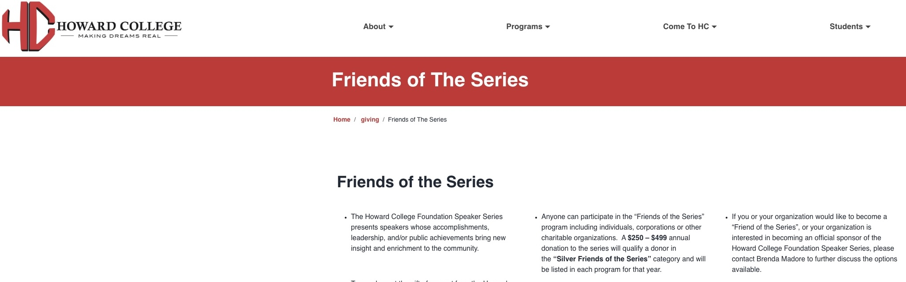
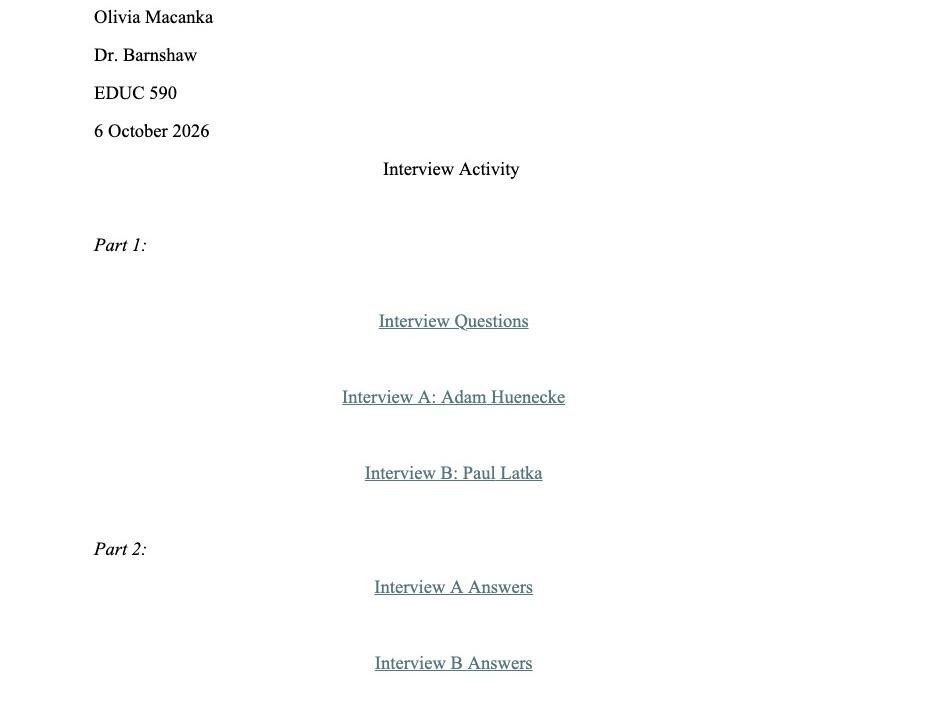
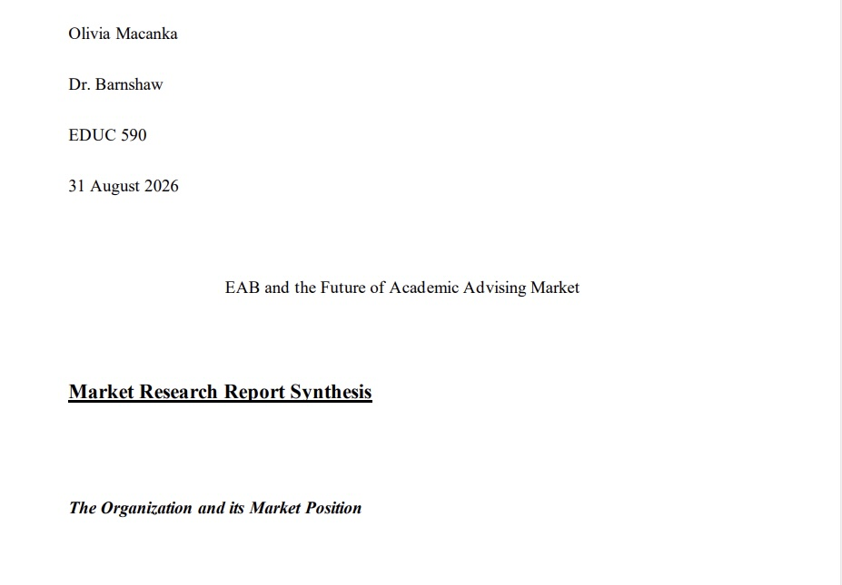

Portfolio
Explore my recent work!
My Work
My most recent projects that I have been engaging with!
Projects
360 Exchange
Introduction: The 360 VR Exchange is an Edtech tool that I am working on in collaboration with Dr. Cherner, program director of MEITE. To integrate VR into classrooms, we have been developing a website where teachers can upload, manipulate, and create lessons with 360 videos that we upload. All videos are uploaded to YouTube and to the Pexels account, where we host the 360 content. There have been several K-12 staff who are excited to begin implementation in their own classrooms, and the Pexels account has received over 250 thousand views on our videos. Conclusion: Working on this project has given me insight into accessibility, UX/ UI design principles, and how to collect and incorporate user feedback effectively. Dr. Cherner and I have been developing a partnership with Fayetteville Street Elementary School to continue development for the classroom. Check out our website here: https://tarheels.live/360exchange/

Howard University Website Redesign
Introduction: While in my internship placement with Modern Campus, I have been assigned to work on redesigning the Howard Community College website as one of my main responsibilities. Our goal for this client is to transfer content from their original layout to Modern Campus’ template, while also making the content accessible and easier to navigate. I utilize local components, snippets, assets, and the native CMS system to fix broken links, embed new source code where necessary, and create new layouts. The team has reported immense success and positive feedback from Howard College. Conclusion: This project demonstrates my capability to design functional website tools for the education space. By working on postsecondary websites, I can understand and address the needs of students that the universities serve. The significance not only lies in the empirical knowledge of market needs, but also the technical skills I gained throughout the internship.

Education Venture Financial Report
Introduction: This report was an assignment that I worked on for my “Special Topics in Business” course in October 2026. For this paper, I analyzed Stride, which focuses on Career Readiness. Specifically, I looked through Stride’s 10-k, 8-k, and quarterly earning documents to produce a comprehensive view of the organization’s success, and where they might best allocate their resources in the future. When presented to the class, the information was well received and felt summative of the company's exposure in the marketplace. Conclusion: Through this essay, I learned how to predict future market conditions and how to evaluate a company and its competitors. The skill of analysis and market predictions is crucial when considering the personal applications, I will pursue when developing educational tools. By learning how to analyze market conditions, I can tailor my edtech tools to meet the demands of the consumer.

Interview with Website Designers
Introduction: For the course “Special Topics in Business,” I conducted an interview with two supervisors at Modern Campus in October 2026. The first was the Supervisor Lead, who runs the department and manages eight product managers, Adam Huenecke. The second is a project lead responsible for the Monroe University production of services, Paul Latka. In this interview, I asked about their process in delivering the updated content to the corresponding university departments, how technology has shaped their experience, and where they believe the education sector is heading based on their perception. The interview was met with approval, since their thoughts echoed what was being taught in class. Conclusion This interview helped reshape my thoughts on how higher education functions and the factors that play into serving public schools. While the information itself was useful, the practice of formulating questions, follow up questions, and the documentation process was also valuable in that it gave me experience in research and professional communication.

EAB Global Market Research Report
Introduction: I produced this Market Research Report in September 2026. For this activity in “Special Topic in Business,” I research EAB Global, looking at its competitors, its current demand, the products it offers, and its product market fit. I focused primarily on major trends and the implications of external factors. Conclusion: This research report is significant in that it was the first report I have completed, and it taught me what questions I should be asking when reviewing product options and fit. I learned that just because a company can produce a tool, that viability and utility are not ensured for consumers and stakeholders.